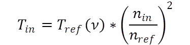

!!! The Torque Converter Model is still in development !!!This file defines the
torque converter characteristics as described in VDI 2153:
Speed Ratio (ν)
= Output Speed / Input Speed
Torque Ratio
(μ) = Output Torque / Input Torque
Input Torque
(T
ref(ν)) is the input torque (over ν) for a
specific reference engine speed (see
below).
The Input Torque at reference engine speed is needed to
calculate the actual engine torque using this formula:

with:
Tin
= engine torque [Nm]
Tref(ν) = reference torque at reference rpm
(form .vtcc file) [Nm]
nin = engine speed [1/min]
nref = reference rpm [1/min] (see below)
The torque converter characteristics must also be defined for speed
ratios of more than one (
ν>1)
in order to calculate overrun conditions (torque<0).
File Format
The file uses the
VECTO CSV format.
Format:
- Three columns
- One header line
- At least two lines with numeric values (below file header)
Columns:
| Speed
Ratio ν |
Torque
Ratio μ |
Input
Torque at reference rpm |
| ... |
... |
... |
| ... |
... |
... |